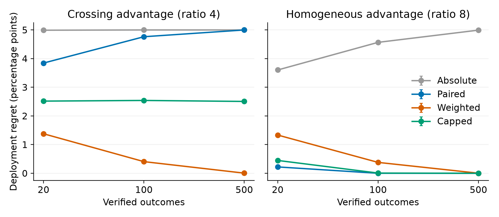

Outcome feedback can be accurate about the cases it reveals yet misleading about an advisor’s overall competence. I distinguish estimating absolute advisor accuracy from deciding whether the advisor is more accurate than oneself. Uniformly sampled disagreements preserve the sign of the paired accuracy difference, although comparing the advisor’s selected accuracy with one’s marginal accuracy can reject a superior advisor. Confidence-dependent verification can remove this protection. A prospectively specified simulation compared absolute, paired, inverse-probability-weighted, and capped-weight summaries at fixed feedback budgets. In the prespecified crossing-advantage scenario, weighting reduced deployment regret by 4.357 percentage points (97.5% Monte Carlo interval [-4.383, -4.332] for weighted minus paired regret). In a control with the same marginal source accuracies but a positive advisor advantage in both confidence strata, weighting increased regret by 1.112 points at the smaller budget and stronger selection ratio; the directions also held at matched budgets and ratios. These model consequences show that correcting selection can help or harm a finite-feedback decision within a global adoption task. The model generates a refutable prediction for an experiment crossing feedback selection with the display of absolute or paired accuracy. Its behavioural interpretation remains untested: simulated decision makers implement stipulated estimators, and the study does not demonstrate how people learn from selective feedback.
Keywords: advice taking; selective feedback; confidence; comparative accuracy; simulation; inverse probability weighting
A person who verifies an advisor’s recommendation learns whether that recommendation was correct. Across cases, however, verified recommendations need not represent the advice the person will receive next. Disagreements may be especially likely to attract scrutiny, and people may preferentially check disagreements when they feel confident in their own answer. The resulting feedback can answer a different question from the one used to decide whether to adopt the advisor. This paper asks when feedback that is selective in this way still supports a sound comparative judgement, and when correcting its selection improves the eventual decision.
The distinction matters because the practical question is often comparative. A person deciding whether to use an advisor may need to know whether its decisions are better than their own, without needing an unbiased estimate of either source’s absolute accuracy. Conversely, an apparently low advisor hit rate need not justify rejecting it if one’s own hit rate on those same cases is lower. I analyse this distinction in a deliberately constrained setting: after observing verified cases, a decision maker selects either their own initial judgements or the advisor for a new, randomly drawn set of cases. The model concerns this global adoption decision; it does not optimise which source to use on each individual case.
Research on advice taking already distinguishes agreement from accuracy. Pescetelli and Yeung (2021) showed how decision confidence contributes to advice taking and trust formation, including how agreement and confidence can supply evidence when objective feedback is unavailable. Their account also exposes distortions when judgements are dependent. Jaquiery and Yeung (2024) experimentally separated preferences for agreement and accuracy; objective feedback supported a preference for accurate advice. These findings motivate attention to the evidence on which advisor judgements rest, but they do not establish how people interpret feedback selected from disagreements.
Learning depends on which outcomes can be observed and how feedback is interpreted (Einhorn & Hogarth, 1978). Selective experience can sustain inaccurate impressions without requiring intrinsically hostile attitudes. Denrell and March (2001) formalised how adaptive choices restrict later information, and Denrell (2005) applied experience sampling to impression formation. In interpersonal trust, Fetchenhauer and Dunning (2010) found that feedback supplied independently of the decision to trust reduced excessive scepticism. These studies establish the broader sampling problem. They do not imply that every comparative inference requires representative feedback: uniformly sampled disagreements can identify the comparative sign because the excluded agreements contribute zero to the difference. Unverified disagreements do not have zero contributions; their selection must still be accounted for.
Selective feedback need not produce naive inference. Elwin et al. (2007) found that a constructivist account of how people encoded observed and missing feedback described their tasks better than simply learning from observed outcomes. Their design also approximately matched the amount of feedback across selection conditions by allowing more opportunities under selective feedback. The present paper therefore treats naive summaries as candidate rules, not an established description of people.
Verification and learning from verified cases are also distinct. Fok and Weld (2024) argue that explanations help human–AI decision making when they enable verification. Honeycutt et al. (2020) found that soliciting interactive feedback could reduce users’ trust and impressions of model accuracy. Neither result implies the mechanism modelled here. The present analysis assumes that verification accurately reveals the truth and asks what can then be inferred from the selected history. It therefore concerns a downstream problem even when verification itself succeeds.
Recent computational work further limits the claim to priority. Gao et al. (2021) used inverse-probability weighting in learning human–AI routing from bandit feedback. Their problem involves selectively observed rewards and policies that exploit complementary performance. Zavattari et al. (2026), in a recent preprint, analyse allocation of a human audit budget across an agent fleet, including confidence dependence and updating after audits. Li and Steyvers (2026), also in a preprint, examine learning the relationship between AI confidence and accuracy. The contribution here is neither weighting nor learning advisor reliability in general. It is the comparison of absolute and paired feedback summaries for a global adoption decision, together with the finite-feedback consequences of correcting selection within disagreements.
I first establish which comparative conclusions follow directly from the sampling mechanism. These are analytic properties rather than simulated discoveries. I then compare the decision losses induced by several summaries when only a finite set of verified outcomes is available. The registered computational predictions anticipate a benefit of weighting when confidence selection reverses the population comparison and a cost when selection instead favours informative comparisons. Finally, I specify a feedback-display experiment that could reject the proposed connection between these summaries and human judgement. No human outcome data are analysed, and no behavioural mechanism is considered confirmed by the simulation.
Consider a two-alternative decision with exactly one correct response. Let \(A\) and \(H\) indicate the correctness of the advisor’s and human’s initial responses; disagreements therefore imply \(A+H=1\). Let \(D\) indicate disagreement between those responses, \(d=P(D)\), \(h=E[H]\), and \(\Delta=E[A-H]\). On an agreement, \(A-H=0\). Therefore, for \(d>0\),
\[E[A-H\mid D]=\frac{\Delta}{d}.\]
Uniform disagreement feedback preserves the sign of the overall accuracy advantage. It does not recover its magnitude without \(d\), nor does it identify either marginal accuracy. This connects to the classical comparison of correlated proportions (McNemar, 1947); here the identity follows directly from the zero contribution of agreements. On a binary disagreement exactly one source is correct, so
\[E[A\mid D]=\frac{1+\Delta/d}{2}.\]
An absolute summary compared with the known marginal human benchmark favours the advisor only when \(\Delta>d(2h-1)\). A paired summary instead favours it whenever \(\Delta>0\). This comparison isolates an estimand mismatch: both the numerator and the benchmark must refer to the same selected cases. It is not a general claim that selected advisor accuracy must be biased downward.
Now distinguish low- and high-confidence strata with population proportions \(p\) and \(1-p\), and within-stratum marginal advisor advantages \(\delta_c=E[A-H\mid C=c]\), for \(c=L,H\). These contrasts include both agreements and disagreements within each stratum. Within each confidence stratum, verification is random among disagreements. Let \(k=\pi_H/\pi_L\ge1\) be the ratio of high- to low-confidence verification probabilities among disagreements. The sign of the selected paired comparison is then the sign of
\[p\delta_L+(1-p)k\delta_H.\]
Let \(d_c=P(D\mid C=c)\). The audited numerator contains \(p d_L E[A-H\mid D,L]+(1-p)k d_H E[A-H\mid D,H]\); substituting \(d_cE[A-H\mid D,c]=\delta_c\) gives the preceding expression. Selection can reverse the global ordering when conditional advantages have opposite signs. If the advisor is better in both strata, positive reweighting cannot reverse the population sign. Inverse selection weights recover the sign of \(\Delta\), provided both disagreement strata have positive sampling probability and verification is independent of which source is correct within each stratum. With sample normalisation, the resulting score estimates the mean contrast among all disagreements, \(\Delta/d\), rather than the unscaled global advantage. A capped weight generally targets a different selected contrast. Neither the unweighted nor the normalised weighted estimate is treated as a universally unbiased estimate of global accuracy difference.
For \(\delta_L>0>\delta_H\), the sign changes at \(k^*=p\delta_L/[(1-p)|\delta_H|]\). If the true ratio is \(k\) but the low-stratum weight is \(w\), the corrected numerator is proportional to \(p\delta_L w/k+(1-p)\delta_H\). Capping substitutes \(w=\min(k,b)\) for cap \(b\). These expressions also describe misspecified weights. The sign suffices only for a cost-free choice between sources: a non-zero adoption cost requires the magnitude \(\Delta\), and therefore the disagreement rate as well as its conditional contrast. The disagreement rate itself is observable without truth labels when both initial responses are recorded.
Finite samples make the policy comparison less straightforward. Weights amplify contributions from rarely verified cases, potentially increasing decision error even when their limiting target is appropriate. Moreover, correcting a harmless selection can discard its informational advantage. The simulation quantifies these losses under explicit environments and feedback budgets. It does not require simulation to establish the preceding identities.
The finite-label comparisons can be calculated without Monte Carlo approximation. Let \(Q_j\) be the probability of audited category \(j\) and let \(u_{mj}\) be its contribution to summary \(m\) before a positive normalising denominator: \(A-h\) for absolute evaluation, \(A-H\) for pairing, and \(w(C)(A-H)\) for weighted pairing. For rational scenario parameters, choose a positive common denominator \(M\) and define integer increments \(\tilde u_{mj}=M u_{mj}\). This rescaling preserves zero scores and the sign of every score. Define the finite Laurent polynomial
\[G_m(z)=\sum_j Q_j z^{\tilde u_{mj}}.\]
After \(n\) independent labels, \(P(\tilde S_m=s)=[z^s]G_m(z)^n\). For \(\Delta\ne0\), expected regret is therefore
\[R_m(n)=|\Delta|\left\{\sum_{s:\,s\Delta<0}[z^s]G_m(z)^n+\tfrac12[z^0]G_m(z)^n\right\}.\]
Here \([z^0]G_m(z)^n\) is the exact score-tie probability, and its half weight implements fair random choice. For a marginal accuracy tie regret is zero. The finite-budget boundary between two summaries is \(R_m(n)=R_{m'}(n)\), evaluated by convolution of these score distributions. An analyst knowing the scenario probabilities can compute this boundary; the simulated learner receives the sampled cases and its specified benchmark or weights, not the true risk. This formula explains the exact checks and supports the exploratory matched-pattern analysis. For a fixed number of encountered cases, the same convolution instead uses encounter-category probabilities, including an unaudited category with zero score. Simulation provides a separately implemented numerical check and preserves the prospectively specified analysis.
The hypotheses, environments, estimators, exclusions, and inference
criteria were committed locally before hypothesis-bearing computation
(git commit 68c07e4). This provides a recoverable
prospective record, not an independently timestamped public
registration. Before that commitment, the workflow examined published
articles, dataset documentation, and idea reviews, but no
participant-level outcomes or hypothesis simulations. No existing
dataset was used. A previous project remained in repository history; its
deleted outcomes and manuscripts were not inspected.
The command ./run_all.sh regenerates synthetic raw count
histories, analyses, numerical checks, figures, and the manuscript.
Saved count histories are sufficient for every estimator because
feedback order is not used. Configuration, seeds, software versions, and
hashes accompany the results. The main specification was followed;
implementation clarifications and any later reviewer-requested analyses
are documented in deviations.md. Full decisions, source
audits, deviations, and reviewer responses accompany the manuscript.
OpenAI Codex generated the study design and analysis code, executed the
scripts, and checked results with a separate implementation; all
reported results come from these scripts. The Transparency and
declarations section and ai_disclosure.md identify the
tools, review models, dates, access routes, and scope of assistance.
Human correctness probabilities were 0.60 and 0.90 in low- and high-confidence strata. These are calibrated confidence categories by construction, not estimates from human ratings. The grid crossed low-confidence shares 0.25, 0.50, 0.75, advisor low-confidence accuracies 0.65, 0.80, 0.95, advisor high-confidence accuracies 0.70, 0.80, 0.90, and overlap positions 0.00, 0.50, 1.00, yielding 81 environments. An additional homogeneous-advantage control brought the total to 82. Every registered grid environment has \(\delta_L>0\ge\delta_H\). High-confidence oversampling therefore shifts the paired comparison towards the human: it can reverse a superior advisor’s ranking but reinforces the correct ranking of an inferior advisor. Results for other sign patterns come only from the later exploratory extension, whose conditional advantage magnitudes are deliberately narrow.
For each stratum with marginal accuracies \(h_c,a_c\), the probability of both sources being correct was
\[q_c=\max(0,h_c+a_c-1)+r\{\min(h_c,a_c)-\max(0,h_c+a_c-1)\}.\]
The four joint masses were \(q_c,h_c-q_c,a_c-q_c,1-h_c-a_c+q_c\). Thus the dependence parameter \(r\) locates the joint distribution within its feasible bounds; it is not a correlation coefficient. For binary decisions, disagreement is equivalent to exactly one response being correct. The model uses only this relation and the joint correctness probabilities; no truth-prevalence estimate or perceptual mechanism is needed. At feasible-bound endpoints, some outcome categories have zero probability. Those boundary cases remain in the grid and can make some comparisons deterministic.
The focal crossing environment used equal stratum shares, midpoint overlap, and advisor accuracy 0.80 in both strata. The advisor was better at low confidence and worse at high confidence, while its marginal accuracy was 0.80 against human accuracy 0.75. The homogeneous control had advisor accuracies 0.65 and 0.95, retaining the same marginal accuracies but a positive advantage in both strata. These scenarios were selected in advance to contrast two mechanisms; they are not empirical prevalence estimates. Their conditional advantages were chosen deliberately to cross or remain positive, with the analytic selection boundary in view. They also differ in disagreement rate and conditional informativeness; the focal contrasts further use different budgets and ratios. Thus the two predictions illustrate contrasting conditions rather than isolate a single causal factor. Matched comparisons are also reported.
Feedback was either a random sample of all cases or a sample of disagreements with high-to-low verification ratios 1, 2, 4, 8. Under disagreement schedules, verification probabilities were \(1/k\) at low confidence and unity at high confidence; agreements were never verified. Histories contained 20, 100, 500 independent verified outcomes. Matching verified outcomes holds the feedback budget constant but does not equate the number of cases encountered. I therefore also report audit yield and the expected opportunities needed to obtain each history.
The absolute learner subtracted known marginal human accuracy from observed advisor accuracy. The paired learner averaged \(A-H\) on verified cases. The inverse-probability-weighted learner averaged the same difference using weights \(k\) and unity in the low- and high-confidence disagreement strata, divided by their realised total. The capped learner limited these weights to 2, a prospectively fixed, intentionally simple intermediate correction. Under random feedback all weights were equal.
Each learner selected the advisor for a positive score and the human for a negative score. A numerical tie within 1e-12 was averaged over fair random selection. Learners within a condition used identical histories, permitting paired Monte Carlo contrasts. The known human benchmark gives the absolute learner information beyond the observed sample; it is a deliberate, favourable-information assumption. Every rule was computed from the same paired records; the absolute rule uses only the advisor component. The paired rules use both components, and the implemented weighting rule additionally receives confidence-stratum labels and the true sampling ratio. Calibration makes the strata psychologically interpretable but is not required for the weighting algebra.
Known ratios are sufficient, not necessary, for a feasible correction. If both initial responses and confidence are recorded on all encountered cases, their unlabelled disagreements identify the population stratum masses \(p_c d_c\). Verification counts can estimate the selection ratio. Alternatively, post-stratification estimates \(\widehat\Delta=\sum_c \widehat{p_c d_c}\,\overline{(A-H)}_{V,D,c}\), where the final factor is the mean among verified disagreements in stratum \(c\). Under conditional random verification and positive support, this estimator is consistent without a disclosed ratio. Empty verified strata require an additional finite-sample rule, such as a preregistered prior on their contrast or retaining the baseline until each stratum has feedback. Such choices add assumptions or change the stopping policy and must be evaluated in their own right. These encounter-level estimators are not evaluated here: estimating masses or weights changes sampling variability and dependence, so neither their finite-sample risk nor the direction of every known-weight contrast follows from this study. The misspecified-weight analysis concerns a rule using an externally supplied or assumed ratio; observed encounter counts could help prevent that error.
The outcome was expected deployment regret: the accuracy loss on a future random case relative to the better fixed source. It equals \(|\Delta|\) multiplied by the probability of selecting the inferior source. This benchmark cannot establish complementary team performance and does not exploit confidence-contingent delegation. When marginal accuracies tie, regret is zero and ranking error is undefined; those environments remain in the output.
H1: In the crossing environment with verification ratio 4 and 100 verified outcomes, weighted paired evaluation produces less regret than unweighted paired evaluation.
H2: In the homogeneous control with verification ratio 8 and 20 verified outcomes, weighted paired evaluation produces more regret than unweighted paired evaluation.
Each condition contained 20,000 independent histories generated with NumPy PCG64 and seed 20260928. Separate child streams were assigned to conditions in fixed order. For each hypothesis, I estimated weighted minus paired regret within the same histories and calculated a 97.5% normal Monte Carlo interval. The prespecified Bonferroni adjustment covers the 2 contrasts jointly at approximately 95%. A wholly predicted-side interval supports the computational prediction; a wholly opposite-side interval contradicts it; overlap with zero is unresolved. These intervals describe numerical integration precision. The outcomes are fixed consequences of the stipulated model, and prospective specification constrains the reporting choices rather than creating empirical uncertainty. An independently implemented exact convolution subsequently evaluated the focal score distributions; those calculations verify the simulated contrasts. The output retains the original support labels to preserve the registered decision rule, while the text reports the numerical directions.
All scenarios, budgets, and learners were retained. Additional prespecified descriptions included adoption probabilities, limiting scores, capped correction, audit yields, and the lowest tested budget at which weighting improved estimated regret. Grid comparisons used the prespecified regret tolerance 0.0005 in proportion units (0.05 percentage points); they are descriptions of a chosen design, not statistical generalisations to a population of tasks.
Both registered contrasts had the predicted direction. Independent exact values fell inside their Monte Carlo intervals (Table 1).
| Prediction | Monte Carlo difference | Exact difference | Monte Carlo interval | Direction |
|---|---|---|---|---|
| H1 | -4.357 | -4.344 | [-4.383, -4.332] | weighted lower |
| H2 | 1.112 | 1.088 | [1.079, 1.145] | weighted higher |
Table 1. Prespecified regret contrasts with independent exact checks. Regret and contrasts are percentage points of expected accuracy on a future random case. Intervals quantify Monte Carlo uncertainty, with the family-wise adjustment specified before computation.
In the crossing environment, uniform disagreement feedback gave the advisor a limiting selected accuracy of 58.333%, against the known marginal human benchmark of 75.0%. The paired contrast was positive at 0.167, correctly favouring the advisor. With high-confidence verification ratio 4, the selected advisor accuracy became 41.667% and the paired contrast became -0.167. Weighting restored the limiting contrast to 0.167. The crossing environment has reversal threshold 2. At that ratio the limiting paired contrast is zero; at ratio 4, the registered cap also produces a zero limiting contrast. Capped adoption near chance in this scenario reflects this neutral boundary. Under random feedback, the absolute rule benefits from its supplied true human benchmark and avoids estimating human accuracy from the feedback sample.
| Environment | Selection | Labels | Absolute | Paired | Weighted | Capped |
|---|---|---|---|---|---|---|
| crossing | all cases | 100 | 88.9% | 81.9% | 81.9% | 81.9% |
| crossing | disagreements, k = 1 | 100 | 0.0% | 95.4% | 95.4% | 95.4% |
| crossing | disagreements, k = 4 | 100 | 0.0% | 4.7% | 91.9% | 49.2% |
| crossing | disagreements, k = 4 | 500 | 0.0% | 0.0% | 99.9% | 49.9% |
| homogeneous | disagreements, k = 8 | 20 | 27.9% | 95.6% | 73.3% | 91.0% |
| homogeneous | disagreements, k = 8 | 100 | 8.7% | 100.0% | 92.4% | 99.9% |
| homogeneous | disagreements, k = 8 | 500 | 0.1% | 100.0% | 100.0% | 100.0% |
Table 2. Advisor adoption probabilities in focal environments. Each row uses the same histories across summaries; selection refers to the high-to-low verification ratio among disagreements. The advisor is globally superior in both environments. Adoption is the proportion of histories choosing it, counting a tied history as half an adoption. Entries come from the prespecified simulation, including the random-feedback benchmark. The machine-readable output retains unrounded probabilities and tie rates.

The registered grid included 54 superior-advisor environments, 24 inferior-advisor environments, and 3 exact marginal ties. All have a positive low-confidence and nonpositive high-confidence advisor advantage. At ratio 8, the limiting paired sign reversed the global ordering in 24 environments, all with globally superior advisors.
| Advisor group | Labels | Lower regret | Higher regret | Within tolerance |
|---|---|---|---|---|
| All | 20 | 44 | 22 | 15 |
| All | 500 | 36 | 9 | 36 |
| Superior | 500 | 36 | 0 | 18 |
| Inferior | 500 | 0 | 9 | 15 |
| Tied | 500 | 0 | 0 | 3 |
Table 3. Registered environment counts comparing weighted with paired regret at selection ratio 8. Subgroup rows partition the all-environment row at the largest registered budget; this is a finite-budget description, not an asymptotic result.
Complete results, including all capped and dependence settings, are in the machine-readable tables. Among inferior advisors, high-confidence selection supports the correct ranking; correction removes some of that support and can increase finite-label loss. No grid frequency estimates the prevalence of such environments in practice. Categories use weighted minus paired regret: below -0.0005, within the inclusive bounds ±0.0005, or above 0.0005 in proportion units.
In the crossing scenario, uniform disagreement selection verified 30.0% of encountered cases, requiring an expected 333.3 opportunities for 100 labels. Selection ratio 4 reduced yield to 15.0%, requiring 666.7 opportunities for the same label budget. In the homogeneous control, ratio 8 required 266.7 expected opportunities for 20 labels. Random all-case verification requires one opportunity per label. These are expected acquisition costs under independent cases, not realised waiting times.
Numerical checks verified the joint probability tables and margins, analytic sign properties, equivalent learners under uniform weighting, and exact binomial benchmarks for the focal uniform-disagreement conditions. The saved verification report records each comparison and its prespecified Monte Carlo tolerance. No history was excluded. Independent exact convolution checked all 120 focal learner conditions. The supplementary focal tie-probability table records ties explicitly; fair random tie-breaking is integrated into every risk.
The following analyses were added after seeing the registered results and are exploratory. Exact discrete score convolutions compare fixed encounter budgets and misspecified positive selection weights.
With 100 encountered cases in the crossing environment at ratio 4, the expected label count was 15.0. Weighted and paired regret were 1.521 and 3.700 percentage points respectively (difference -2.179).
With 20 encountered cases in the homogeneous environment at ratio 8, the expected label count was 1.5. Weighted and paired regret were 1.830 and 1.681 percentage points respectively (difference 0.149).
The contrast directions persisted at these encounter budgets, with smaller magnitudes. At fixed encounters, random all-case verification means verifying every encountered case. It has identical paired-rule risk to uniform-disagreement verification: removing agreement labels removes zero score contributions. Their label costs differ.
In the crossing environment, the limiting weighted ranking is correct only when the assumed low-stratum weight exceeds half the true selection ratio. Exact inverse weights need not minimise finite-feedback classification loss: an incorrect weight can emphasise a favourable stratum and improve one selected scenario while changing the target. This prevents interpreting the weighting rule as a universally optimal adoption policy.
For the crossing focal setting (true ratio 4, 100 labels), assumed low-stratum weights 1, 2, 4, 8, 16 produced exact regret of 4.765, 2.512, 0.421, 0.070, 0.022 percentage points, respectively.
For the homogeneous focal setting (true ratio 8, 20 labels), assumed low-stratum weights 1, 2, 4, 8, 16 produced exact regret of 0.214, 0.442, 0.877, 1.302, 1.525 percentage points, respectively.
| Environment | Ratio | Labels | Paired regret | Weighted regret | Capped regret |
|---|---|---|---|---|---|
| crossing | 4 | 20 | 3.854 | 1.365 | 2.526 |
| crossing | 4 | 100 | 4.765 | 0.421 | 2.512 |
| crossing | 8 | 20 | 4.563 | 1.609 | 3.822 |
| crossing | 8 | 100 | 4.995 | 0.685 | 4.716 |
| homogeneous | 4 | 20 | 0.392 | 1.088 | 0.700 |
| homogeneous | 4 | 100 | 0.003 | 0.209 | 0.041 |
| homogeneous | 8 | 20 | 0.214 | 1.302 | 0.442 |
| homogeneous | 8 | 100 | 0.000 | 0.380 | 0.007 |
Table 4. Matched focal comparisons, exact regret in percentage points. These descriptive exact checks use the same budgets and ratios in both environments; they do not change the registered contrasts.
A second exploratory extension crossed advisor advantages of plus or minus 0.05 in each confidence stratum with the registered stratum proportions and overlap positions. It included 36 environments and 2,160 exact learner-condition evaluations, retaining 6 marginal ties. All four advantage-sign patterns were represented at common ratios and budgets.
| Advisor advantage pattern | Minimum difference | Maximum difference |
|---|---|---|
| Better in both strata | 0.000 | 0.670 |
| Better only at high confidence | -2.310 | 0.616 |
| Better only at low confidence | -2.310 | 0.562 |
| Worse in both strata | 0.000 | 0.661 |
Table 5. Exploratory ranges of weighted-minus-paired regret in percentage points at ratio 4 and 100 labels.
Both crossing directions contained benefits and costs; neither same-sign pattern showed an improvement at this matched comparison. The identical minima arise at maximum-overlap environments with the same audited stratum probabilities: reversing the conditional score signs and the global superiority preserves each history’s decision loss. These exact scenario ranges are not confidence intervals and do not estimate how often each pattern occurs outside the model. The extension tests breadth over matched sign patterns while retaining a deliberately narrow advantage magnitude.
Within the stipulated global-adoption task, selection adjustment changed accuracy loss in opposite directions across the two focal conditions: 4.36 percentage points less loss in the crossing scenario and 1.11 points more in the homogeneous scenario. These are quantitative consequences of the model. Their practical interpretation depends on the decision being made, the feedback budget, and whether the observed cases favour the same source as future cases.
The first implication concerns the target of feedback. When advice and an initial judgement agree, the verified truth cannot favour one response over the other. Under uniform disagreement sampling, comparing the two sources on the same cases therefore retains the information required for global ranking. A low selected advisor hit rate can coexist with a useful advisor because the decision maker’s own accuracy on those cases is lower still. This qualification complements sampling accounts of mistrust (Denrell, 2005; Fetchenhauer & Dunning, 2010): representativeness of observed outcomes is not equally necessary for every judgement.
The protection depends on which disagreements are seen. Confidence-dependent selection changes the balance between contexts in which each source has an advantage. Pairing removes a mismatch between samples, but it does not remove a mismatch between the verified sample and the target population. This explains why adding the human’s own hit rate to a feedback display may sometimes suffice and sometimes fail. The inference is conditional on the joint accuracy structure, not on an assumption that increased advisor acceptance is inherently desirable. Inferior advisors and exact ties were retained in the grid precisely because greater reliance is not itself an improvement.
Weighting adds a further distinction between estimation and action. Recovering the right limiting contrast does not guarantee a better finite-feedback adoption decision. An unweighted score may be distorted in magnitude yet preserve the appropriate sign, and selective verification can concentrate informative comparisons. Conversely, where selection reverses the sign, gathering more cases under the same uncorrected rule can increase confidence in the wrong source. Capped weights can reduce extreme contributions, but the focal neutral boundary and the full grid do not establish a general advantage for this cap.
The immediate behavioural target is a decision-support intervention: whether displaying paired rather than absolute feedback changes global source adoption in the predicted way. A display experiment can test this claim but cannot by itself identify unaided cognitive updating. The proposed mapping is a substantive behavioural assumption, not a consequence of the accuracy tables.
An initial test should evaluate two described sources, a baseline judge and an advisor, with the baseline’s marginal accuracy explicitly displayed and comprehension checked. This isolates feedback interpretation but does not test self–other asymmetry. A subsequent self-evaluation study would need participants’ own earlier judgements and confidence, replayed or yoked under a separately specified design. Conclusions about two third-party sources would not establish how people evaluate themselves.
Generate histories under each assigned selection schedule and hold each history fixed across raw-history and summary-display conditions within that schedule. Pseudorandomise or counterbalance case order, because the summaries are exchangeable but human responses may show primacy or recency. In raw-history conditions, show verified cases and confidence strata without an aggregate accuracy score. Histories differ across selection schedules. Randomise schedule disclosure and check understanding independently of adoption. In display conditions, present advisor-only, paired, or adjusted summaries alongside the same history and baseline benchmark. The advisor-only and paired displays can imply opposite rankings for the same truthful history; the no-summary condition establishes which comparison people produce unaided. A further condition can expose encounter-level disagreement counts, allowing selection-aware evaluation without disclosing the ratio.
A concrete prospective response family is \(P(\mathrm{adopt}\mid S)=\lambda/2+(1-\lambda)\operatorname{logit}^{-1}(\beta S)\), with \(\beta>0\) and \(0\leq\lambda<1\). The candidate scores \(S\) are the absolute, paired, and selection-adjusted summaries defined above. This response family is an exploratory specification for future model comparison, not a fitted model or an additional simulated result. Within a preregistered task, sensitivity and lapse parameters must be shared across sampling schedules; otherwise arbitrary condition-specific parameters could absorb the predicted differences.
The accounts make distinct large-history orderings on the raw-history crossing task, with fixed positive sensitivity and a lapse rate below unity. These orderings do not apply to every short stochastic history. A finite experiment must preregister its histories and budgets and calculate predictions from the realised scores of those histories, rather than substitute population limits. In this focal task, \(0<\Delta<d(2h-1)\), so absolute evaluation against the supplied marginal baseline predicts adoption below chance after uniform disagreement feedback, and the stronger confidence selection also leaves its score negative. Paired evaluation predicts adoption above chance under uniform selection and below chance when the selection ratio exceeds the analytic reversal threshold, as in the focal ratio 4. Selection-aware evaluation predicts above-chance adoption under both when histories are sufficiently informative and either schedule disclosure or encounter counts identify selection. Without either input, this version of the account makes no prediction for that condition. Display compliance predicts sensitivity to the supplied summary when it changes while the history is held fixed; it is not evidence that the corresponding statistic was computed without the display. An inferior-advisor control tests whether increased adoption reflects discrimination rather than general willingness to delegate.
Future inference should use the likelihood of held-out choices to compare the prespecified response models, alongside directional intervals for the display-by-selection interaction. The proposed comparison concerns pure summary rules; it does not include mixtures of absolute and paired scores. A precise reversed ordering rejects the corresponding pure-rule directional account, without rejecting every possible mixture; an interval concentrated near no interaction rejects a prespecified practically relevant display effect. This paper does not invent a human effect-size threshold from simulated decision makers: a future empirical protocol must fix that threshold, power, comprehension criteria, and model-comparison rule before collecting outcomes. Numeracy, trust in adjusted statistics, and experimental demand remain candidate explanations in this initial test; self–other asymmetry requires the separate self-evaluation extension. The raw-history and disclosure conditions are needed because a successful display intervention alone cannot adjudicate among them.
The environments are stylised, not fitted to behavioural records or deployed systems. Discrete calibrated confidence strata omit noisy self-assessment and continuous difficulty. Correct feedback, stable source accuracies, and independent cases favour the statistical corrections. Supplying true selection weights avoids estimation noise in the implemented rule, although observed encounter counts permit estimated-weight or post-stratified alternatives. Their finite-sample performance remains unevaluated. Confidence-only weighting also requires selection to be independent of which source is right within a confidence stratum. If unmeasured difficulty or other within-stratum cues violate that condition, this correction generally fails. If a disagreement stratum is never verified, its contribution is not identified by these data; additional restrictions or positive random verification are required. The exploratory weight sensitivity preserves positive support and does not solve these missing-information cases. The fixed, exogenous feedback schedule also omits the feedback loops studied in adaptive sampling accounts (Denrell & March, 2001). There is no evidence here about permanent abandonment, changes in trust over time, or why a person chooses to verify a case.
Global adoption is appropriate for a constrained handoff, such as selecting one source for a batch when casewise routing is unavailable. For example, a human may judge and report confidence during an evaluation phase, then hand off a batch without making initial judgements; human confidence is available for learning but absent at deployment. If routing by confidence is possible, the action space changes. The confidence-contingent oracle achieves 85.0% in the crossing environment compared with 80.0% for the best fixed source, and 80.0% in the homogeneous control. Within-stratum paired estimates preserve each stratum’s sign without between-stratum weighting, although sparse strata still create finite-sample uncertainty. The present results do not show that global weighting is preferable to learning such a routing policy.
The resource comparison is equally specific. Equal label counts make sense when obtaining truth is the expensive step, but selective verification can require substantially more opportunities. Where time, delay, or opportunity costs dominate, equal-label comparisons alone do not establish the preferable policy. The model reports this cost rather than attaching an arbitrary exchange rate to labels and opportunities.
Finally, selection adjustment here is a benchmark available to a software display, not necessarily a plausible mental calculation. Its relation to human choice remains open, and the theoretical distinction may prove more useful for feedback design than for explaining existing behaviour. The resulting recommendation is correspondingly limited: evaluate advisor and self on matched cases, then establish whether those matched cases preserve the comparative ordering relevant to the next decision. Statistical correction is one possible response when they do not; its finite-feedback cost must also be assessed.
Data and code availability. No participant data were
used. The local research package contains the prospective specification,
synthetic count histories, configuration, complete scripts,
machine-readable outputs, and manuscript source.
./run_all.sh reproduces the analysis. For a future
submission, the complete package is intended for a persistent repository
with a versioned release and DOI, or journal supplementary files. The
archive plan preserves the full unsquashed git history, including the
prospective commit and its predecessors; this enables inspection of the
record without establishing an independent historical timestamp. No
public archive or identifier exists yet; the current task requires local
preparation only.
AI assistance. OpenAI Codex (GPT-6 family,
application and independent agents) carried out ideation, searching,
design, coding, analysis, drafting, and checking on 28 September 2026.
Claude (manuscript-review model claude-fable-5-1, with
runtime-reported auxiliary claude-haiku-4-5-20251001) via
its authenticated CLI and Gemini 3.8 Flash (High) via agy reviewed ideas
and drafts; Codex CLI reviewed code and ran the full coarse-ink 1.4.0
multi-stage academic review pipeline using Codex gpt-6-sol at high
reasoning effort. Tool responses, settings available from the runtimes,
source audits, and responses are retained. The initial Claude idea call
used the CLI default and did not expose an exact model version. No AI is
listed as an author. This autonomous draft requires the intended human
author’s assessment and approval before submission; no claim of
completed human oversight is made.
Acknowledgements and financial support. Codex generated and revised the manuscript prose, with Claude and Gemini reviews as disclosed above. Existing software subscriptions supported the automated workflow. No dedicated external funding was used by this workflow. The intended author’s funding and competing-interest declarations require human confirmation before submission.
Ethics. This computational study collected no human data and processed no participant records or personal identifiers. It does not claim an institutional ethics determination.